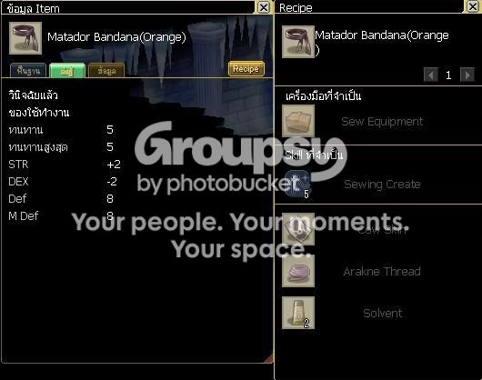

เย้ ขอบคุณจีเอมเปปเป้และคุณhollhorseมากเลยคับ
แล้วทำไมตอนนี้เอาRotary Sailไปให้Flying Garden Keeper
พอปายคุยกับมาน มานมีให้เลือกแต่
-------------------------------------
จะทำอย่างไร?
-------------------------------------
[Seriko Potion]ขึ้นราคา
มี[Seriko Potion]กี่ชิ้น
ไม่ทำอะไรเลย
OK
-------------------------------------
จะส่งใบเรืออ่ะคับบบ ทำไงดี~~~
คำถามปลีกย่อยขอให้มาตั้งในกระทู้นี้คะ ตอบวันต่อวันคะ
 โดย ECO » พฤหัสฯ. 08 พ.ค. 2008 12:35 am
โดย ECO » พฤหัสฯ. 08 พ.ค. 2008 12:35 am
homin เขียน:carotene เขียน:ทำไมเราทำเควสไปเอา Deck of flying empty garden ไม่ได้ล่ะค่ะ ทำเควสเสร็จเเล้วจะไปรับของ เเต่หมีน้อยมันไม่ให้อ่ะ พูดเเต่อะไรไม่รุ หรือว่าเราจะต้องทำเควสหมวกก่อนเหรอคะ ที่รวบรวมเอาสมุดสาบานไปให้น่ะ
ปล.ช่วยตอบทีนะคะ อยู่ฟุจิกิมา 2 อาทิตย์ละ ยังไม่ได้ของเลย T_T
คุยกับฮัลเลลูย่าก่อนรึยังหล่ะครับ :?
ถ้ายังไม่คุยก่อนมันจะไม่ให้นะครับ ต้องได้รับเบาะแสก่อนนะครับถึงจะไปเอาได้
ซึ่งเบาะแสจะประมาณว่า "ที่ Deck of Flying Garden พบขนปุยนุ่นมากมายติดอยู่ และมี
ตุ๊กตาสีน้ำเงินกับแดงอยู่"
ประมาณนี้ครับ อ้อ ... และคนที่เพิ่งเข้าฟูชิกิใหม่ ๆ ก็ไปเอาได้ครับ ไม่ต้องทำเควส หนังสือสัญญาสีเลือด :lol:
:!: พอดีเราดันเอาตัวเลเวล30กว่าไปรับเควสรับชิ้นส่วน - -.
แล้วจะเข้าไปรับของยังไงละคะเนี่ย ให้นั่งเก็บให้เวล64
(เพื่อที่จะได้รับเควสผ่านเข้าไปในนั้นได้) สงสัยจะได้ม่องคาคอมก่อน
*เเล้วเราจะสิงคนที่ทำเควสแล้วเข้าไปได้มั้ย
ถ้าไม่ได้..
*แล้วเราเอาตัวอื่นในไอดีนั้นไปรับชิ้นส่วนแทนได้มั้ย(เหมือนคุ้นๆจะเคยอ่านเจอว่าเอาตัวอื่นในไอดีเดียวกันไปทำไม่ได้)
ถ้าไม่ได้...
แล้วทำไงดีหว่า - -
(นอกจากแคชกะซื้อเองเนี่ย2วิธีนี้ไม่อยากทำเลย ให้ตาย แพงโคะ)
รบกวนผู้รู้ที่เคยทดลองวิธีข้างบนแล้วด้วยนะคะ
- ECO
- Dark Warrior
- โพสต์: 276285
- ลงทะเบียนเมื่อ: พุธ 26 ต.ค. 2011 9:31 pm
 โดย ECO » พฤหัสฯ. 08 พ.ค. 2008 4:07 am
โดย ECO » พฤหัสฯ. 08 พ.ค. 2008 4:07 am
ขอบคุณที่ช่วยเอาลิ้งค์ไรกิวมานะครับ ผมหาไม่เจอว่าของไปอยู่ไหน
เรื่องชิ้นส่วนของฟลายอิ้งการ์เด้นบิน
อ่านแล้วงง เพราะไม่ได้ตามมาแต่ต้น ขออภับด้วย แต่จะไขประเด็นหลัก ๆ ก่อน
1.การเข้าไปพบ NPC Pirate Tiny ที่เกาะโจรสลัด สามารถสิงผู้ที่รับเควสท์ 64 ปราบโจรสลัด เข้าไปได้ โดยต้องทำเควสท์ให้จบ แต่ต้องยังไม่ส่งเควสท์นะครับ
2.การคุยกับหมีตัวนี้ ไม่ต้องทำเควสท์มงกุฏไทนี่ แต่ที่ผมสังเกตได้ คือ "เจ้าของคำถามบอกว่าอยู่ฟุจิกิมา 2 อาทิตย์แล้ว" ผมไม่แน่ใจว่า เควสท์มันแคนเซิลตามเวลาหรือเปล่า ตามเวลาที่ NPC บอกว่า สืบใช้เวลา 1 อาทิตย์ แปลว่าถ้าไม่รับชิ้นส่วนให้ได้ใน 1 อาทิตย์ ต้องข้ามไปชิ้นถัดไปก่อนหรือไม่ ?
ตรงนี้คงต้องให้กลับไปคุยกับช่าง ฮาเลลูย่า ใหม่อีกรอบ แล้วรับชิ้นอื่นไปก่อนครับ เพราะมันวนกันไปเรื่อย ๆ
ถ้าเข้าใจไม่ผิด เจ้าของคำถาม คงไปรับเควสท์ในจุดเปลี่ยนเวลาพอดีหรือเปล่า อธิบายว่าไปรับเควสท์ของเด็ค ตอนก่อนเที่ยงคืนวันเปลี่ยนชิ้นส่วน แต่ด้วยเหตุใดไม่ทราบได้ ทำให้เดินทางไปถึงเกาะโจรสลัดหลังเที่ยงคืนของวันเปลี่ยนชิ้นส่วน เควสท์จึงโดนแคนเซิลไป และหมีในเกาะนั้นจึงพูดกับคุณเหมือนกับไม่มีการรับเควสท์มา นั่นคือให้คุณรวบรวม บลัดโน้ต มาเพื่อทำเควสท์มงกุฏ
3.การสับเปลี่ยนตัวละครในไอดีเดียวกันไปคุยกับ NPC ที่ถาม หมายถึง "ไม่ได้ไปคุยกับฮาเลลูย่าใหม่" ใช่หรือไม่ แต่จะไปรับชิ้นส่วนที่เคยคุยด้วยตัวละครอื่นเลยทันที
ข้อนี้ขอตอบว่า ไม่สามารถรับได้ จำเป็นต้องเอาตัวละครที่จะรับใหม่ ไปคุยกับฮาเลลูย่าอีกครั้งครับ เพราะการจดจำการรับเควสท์ จำตัวละคร แต่การจดจำชิ้นส่วนสวน เป็นการจดจำไอดี
หากคุณจะทำการรับชิ้นส่วนสวนบินด้วยตัวละครอื่นในไอดีเดียวกัน คุณทำได้กับชิ้นใหม่ โดยอาจจะปล่อยให้ตัวเก่าที่เคยรับค้างไว้ไม่ต้องทำอะไรอีกเลยก็ได้ แต่ต้องเอาตัวใหม่ที่จะไปรับ ไปเริ่มการคุยกัยฮาเลลูย่าใหม่ครับ
เช่น รับชิ้นแรกมาแล้ว แต่ตอนนี้ตัวที่รับนั้นไม่สะดวกเดินทางมาที่ทองก้า จึงเอาอีกตัวมาแทน (ไอดีเดียวกัน) ก็สามรถรับคำใบ้ของชิ้นส่วนใหม่ได้ โดยไม่ต้องเริ่มการส่งคลิปบอร์ดอีกครั้ง
ในทางที่อธิบายไปคือเรื่องของ เกมส์เป็นปกติ แต่ถ้าจุดนี้เป็นบั๊คนั้นคงต้องแก้ไขกันทางเทคนิคครับ
ปล.การรับชิ้นส่วนด้วยตัวอื่นในไอดีเดียวกัน เคยลองมาแล้วครับ
เรื่องชิ้นส่วนของฟลายอิ้งการ์เด้นบิน
อ่านแล้วงง เพราะไม่ได้ตามมาแต่ต้น ขออภับด้วย แต่จะไขประเด็นหลัก ๆ ก่อน
1.การเข้าไปพบ NPC Pirate Tiny ที่เกาะโจรสลัด สามารถสิงผู้ที่รับเควสท์ 64 ปราบโจรสลัด เข้าไปได้ โดยต้องทำเควสท์ให้จบ แต่ต้องยังไม่ส่งเควสท์นะครับ
2.การคุยกับหมีตัวนี้ ไม่ต้องทำเควสท์มงกุฏไทนี่ แต่ที่ผมสังเกตได้ คือ "เจ้าของคำถามบอกว่าอยู่ฟุจิกิมา 2 อาทิตย์แล้ว" ผมไม่แน่ใจว่า เควสท์มันแคนเซิลตามเวลาหรือเปล่า ตามเวลาที่ NPC บอกว่า สืบใช้เวลา 1 อาทิตย์ แปลว่าถ้าไม่รับชิ้นส่วนให้ได้ใน 1 อาทิตย์ ต้องข้ามไปชิ้นถัดไปก่อนหรือไม่ ?
ตรงนี้คงต้องให้กลับไปคุยกับช่าง ฮาเลลูย่า ใหม่อีกรอบ แล้วรับชิ้นอื่นไปก่อนครับ เพราะมันวนกันไปเรื่อย ๆ
ถ้าเข้าใจไม่ผิด เจ้าของคำถาม คงไปรับเควสท์ในจุดเปลี่ยนเวลาพอดีหรือเปล่า อธิบายว่าไปรับเควสท์ของเด็ค ตอนก่อนเที่ยงคืนวันเปลี่ยนชิ้นส่วน แต่ด้วยเหตุใดไม่ทราบได้ ทำให้เดินทางไปถึงเกาะโจรสลัดหลังเที่ยงคืนของวันเปลี่ยนชิ้นส่วน เควสท์จึงโดนแคนเซิลไป และหมีในเกาะนั้นจึงพูดกับคุณเหมือนกับไม่มีการรับเควสท์มา นั่นคือให้คุณรวบรวม บลัดโน้ต มาเพื่อทำเควสท์มงกุฏ
3.การสับเปลี่ยนตัวละครในไอดีเดียวกันไปคุยกับ NPC ที่ถาม หมายถึง "ไม่ได้ไปคุยกับฮาเลลูย่าใหม่" ใช่หรือไม่ แต่จะไปรับชิ้นส่วนที่เคยคุยด้วยตัวละครอื่นเลยทันที
ข้อนี้ขอตอบว่า ไม่สามารถรับได้ จำเป็นต้องเอาตัวละครที่จะรับใหม่ ไปคุยกับฮาเลลูย่าอีกครั้งครับ เพราะการจดจำการรับเควสท์ จำตัวละคร แต่การจดจำชิ้นส่วนสวน เป็นการจดจำไอดี
หากคุณจะทำการรับชิ้นส่วนสวนบินด้วยตัวละครอื่นในไอดีเดียวกัน คุณทำได้กับชิ้นใหม่ โดยอาจจะปล่อยให้ตัวเก่าที่เคยรับค้างไว้ไม่ต้องทำอะไรอีกเลยก็ได้ แต่ต้องเอาตัวใหม่ที่จะไปรับ ไปเริ่มการคุยกัยฮาเลลูย่าใหม่ครับ
เช่น รับชิ้นแรกมาแล้ว แต่ตอนนี้ตัวที่รับนั้นไม่สะดวกเดินทางมาที่ทองก้า จึงเอาอีกตัวมาแทน (ไอดีเดียวกัน) ก็สามรถรับคำใบ้ของชิ้นส่วนใหม่ได้ โดยไม่ต้องเริ่มการส่งคลิปบอร์ดอีกครั้ง
ในทางที่อธิบายไปคือเรื่องของ เกมส์เป็นปกติ แต่ถ้าจุดนี้เป็นบั๊คนั้นคงต้องแก้ไขกันทางเทคนิคครับ
ปล.การรับชิ้นส่วนด้วยตัวอื่นในไอดีเดียวกัน เคยลองมาแล้วครับ
- ECO
- Dark Warrior
- โพสต์: 276285
- ลงทะเบียนเมื่อ: พุธ 26 ต.ค. 2011 9:31 pm
 โดย ECO » พฤหัสฯ. 08 พ.ค. 2008 8:27 am
โดย ECO » พฤหัสฯ. 08 พ.ค. 2008 8:27 am
Zilchkung เขียน:ลองเอาตัวละครต่างไอดีกันไปก็พูดเหมือนกันหมดอ่ะคับ - -* แล้วจะต้องทำยังไงละเนี่ย
:oops: ทีมงานดำเนินการแก้ไขปัญหาดังกล่าวเรียบร้อยแล้วค่ะ
ตอนนี้สามารถนำชิ้นส่วน Flying Garden ไปส่งให้กับ NPC : Flying Garden Keeper ได้ตามปกติค่ะ
~ -------------------------------------------------------------------------------------------------- ~
:arrow: RECIPE : Martador Bandana (Orange)


- ECO
- Dark Warrior
- โพสต์: 276285
- ลงทะเบียนเมื่อ: พุธ 26 ต.ค. 2011 9:31 pm
 โดย ECO » ศุกร์ 09 พ.ค. 2008 11:17 am
โดย ECO » ศุกร์ 09 พ.ค. 2008 11:17 am
เกี่ยวกับเควสชุดประจำอาชีพ85อ่ะคับ
ผมเปนคอมมานโด85อะ
ซื้อเสื้อคอมมานโดคำสาป10k แล้วไปตี+5แล้ว แก้คำสาปแล้ว
ระหว่างจะเอาไปคุยกับArusเพื่อให้มันขายกางเกง+รองเท้าอ่ะคับ
ผมเอาไปหลอม - -* แบบว่าความสามารถเสื้อคอมมานโด85แสดงภาพอย่างอื่น
พอเอาไปคุยกับArusมันไม่เหนมีอะไรเกิดขึ้นเลยอ่ะ - -*
อยากถามว่าจะเอาเสื้อไปคุยกับArusเพื่อให้มันขายกางเกง+รองเท้าให้เนี้ย
1.ต้องใช้เสื้อที่ตรงกับเพศตัวเองหรือไม่?
2.ต้องใช้เสื้อที่ตรงกับอาชีพตัวเองหรือไม่?
3.ต้องใช้เสื้อที่ไม่อัพเกรด(ไม่ตี+)เลยสักครั้งเดียวใช่หรือไม่?
4.ต้องใช้เสื้อที่ไม่ได้หลอมหรือทำการใดๆเลยใช่หรือไม่?
ปล.เครียดมากกว่าจะตี+ได้ เงินหมดไม่มีตังซื้อกางเกงแถมยังซื้อไม่ได้อีกตังหาก
ผมเปนคอมมานโด85อะ
ซื้อเสื้อคอมมานโดคำสาป10k แล้วไปตี+5แล้ว แก้คำสาปแล้ว
ระหว่างจะเอาไปคุยกับArusเพื่อให้มันขายกางเกง+รองเท้าอ่ะคับ
ผมเอาไปหลอม - -* แบบว่าความสามารถเสื้อคอมมานโด85แสดงภาพอย่างอื่น
พอเอาไปคุยกับArusมันไม่เหนมีอะไรเกิดขึ้นเลยอ่ะ - -*
อยากถามว่าจะเอาเสื้อไปคุยกับArusเพื่อให้มันขายกางเกง+รองเท้าให้เนี้ย
1.ต้องใช้เสื้อที่ตรงกับเพศตัวเองหรือไม่?
2.ต้องใช้เสื้อที่ตรงกับอาชีพตัวเองหรือไม่?
3.ต้องใช้เสื้อที่ไม่อัพเกรด(ไม่ตี+)เลยสักครั้งเดียวใช่หรือไม่?
4.ต้องใช้เสื้อที่ไม่ได้หลอมหรือทำการใดๆเลยใช่หรือไม่?
ปล.เครียดมากกว่าจะตี+ได้ เงินหมดไม่มีตังซื้อกางเกงแถมยังซื้อไม่ได้อีกตังหาก
- ECO
- Dark Warrior
- โพสต์: 276285
- ลงทะเบียนเมื่อ: พุธ 26 ต.ค. 2011 9:31 pm
 โดย ECO » ศุกร์ 09 พ.ค. 2008 12:02 pm
โดย ECO » ศุกร์ 09 พ.ค. 2008 12:02 pm
Zilchkung เขียน:เกี่ยวกับเควสชุดประจำอาชีพ85อ่ะคับ
ผมเปนคอมมานโด85อะ
ซื้อเสื้อคอมมานโดคำสาป10k แล้วไปตี+5แล้ว แก้คำสาปแล้ว
ระหว่างจะเอาไปคุยกับArusเพื่อให้มันขายกางเกง+รองเท้าอ่ะคับ
ผมเอาไปหลอม - -* แบบว่าความสามารถเสื้อคอมมานโด85แสดงภาพอย่างอื่น
พอเอาไปคุยกับArusมันไม่เหนมีอะไรเกิดขึ้นเลยอ่ะ - -*
อยากถามว่าจะเอาเสื้อไปคุยกับArusเพื่อให้มันขายกางเกง+รองเท้าให้เนี้ย
1.ต้องใช้เสื้อที่ตรงกับเพศตัวเองหรือไม่?
2.ต้องใช้เสื้อที่ตรงกับอาชีพตัวเองหรือไม่?
3.ต้องใช้เสื้อที่ไม่อัพเกรด(ไม่ตี+)เลยสักครั้งเดียวใช่หรือไม่?
4.ต้องใช้เสื้อที่ไม่ได้หลอมหรือทำการใดๆเลยใช่หรือไม่?
ปล.เครียดมากกว่าจะตี+ได้ เงินหมดไม่มีตังซื้อกางเกงแถมยังซื้อไม่ได้อีกตังหาก
1.ไม่ตรงเพศแล้วจะใส่ยังไง?
2.ไม่ตรงอาชีพแล้วจะใส่ยังไง?
3.ไม่เกี่ยวผม+7ยังไปซื้อเกง+เท้าได้
4.ผมหลอมเหมือนกัน
- ECO
- Dark Warrior
- โพสต์: 276285
- ลงทะเบียนเมื่อ: พุธ 26 ต.ค. 2011 9:31 pm
ผู้ใช้งานขณะนี้
กำลังดูบอร์ดนี้: ไม่มีสมาชิก และ บุคคลทั่วไป 2 ท่าน